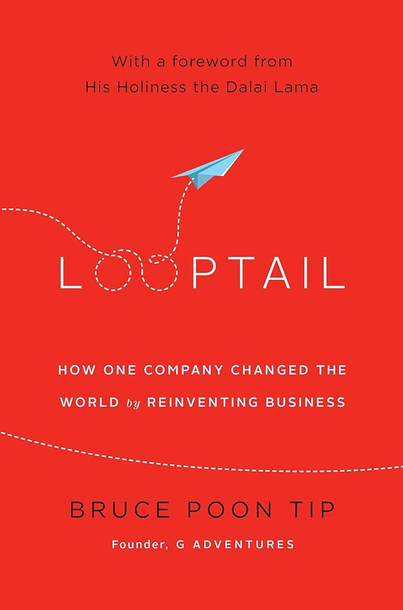

Inspiring Entrepreneur: Bruce Poon Tip
Bruce Poon Tip (BPT), a Trinidad-born Canadian entrepreneur, has transformed the travel industry as the founder of G Adventures, the world’s largest small-group adventure travel company. His journey from a curious teenager to a global leader in responsible tourism showcases his visionary mindset, resilience, and dedication to social impact. Raised in Calgary, Alberta, BPT displayed early entrepreneurial talent, subcontracting newspaper routes at age 12 and earning a Junior Achievement award at 14 for selling 10,000 “Weather Worm” bookmarks. After a backpacking trip to Asia in his early 20s revealed the need for community-focused travel experiences, BPT was inspired to challenge the industry’s status quo.
 In 1990, at just 22, Bruce Poon Tip founded G Adventures with co-founder Anita Voth, using two maxed-out credit cards after banks rejected his loan applications. His bold risk-taking paid off, as G Adventures grew to offer over 750 tours across 100 countries, serving 200,000 travelers annually. His innovative “community tourism” model ensures local economies benefit directly, with initiatives like the “Ripple Score” (launched in 2018 to measure local economic impact) and the “lifetime deposit” policy, which enhances traveler flexibility. His leadership shone during the 2008 recession, achieving 40% annual sales growth and declining a $100 million offer to sell, prioritizing his mission over profit.
In 1990, at just 22, Bruce Poon Tip founded G Adventures with co-founder Anita Voth, using two maxed-out credit cards after banks rejected his loan applications. His bold risk-taking paid off, as G Adventures grew to offer over 750 tours across 100 countries, serving 200,000 travelers annually. His innovative “community tourism” model ensures local economies benefit directly, with initiatives like the “Ripple Score” (launched in 2018 to measure local economic impact) and the “lifetime deposit” policy, which enhances traveler flexibility. His leadership shone during the 2008 recession, achieving 40% annual sales growth and declining a $100 million offer to sell, prioritizing his mission over profit.
BPT’s talents extend beyond business strategy to storytelling and social advocacy. His bestselling book, Looptail: How One Company Changed the World by Reinventing Business (2013), shares his philosophy of blending profit with purpose, earning him accolades like Ernst & Young’s Entrepreneur of the Year and induction into the Social Venture Network Hall of Fame. Through the Planeterra Foundation, founded in 2003, he has supported over 100 community projects, such as women’s cooperatives in Peru and youth programs in Southeast Asia, amplifying his commitment to sustainable development.
G Adventures’ success was due to BPT’s ability to align business with social good. By prioritizing local partnerships, he has built a brand that resonates with travelers seeking meaningful experiences. His legacy lies in proving that a the tourism industry can thrive while it promotes change, inspiring entrepreneurs to rethink the role of business in society. I chose BPT specifically because of his resilience - how he exemplified the principle of people over profit during the most trying time of his career. Additionally, he is inspiring because he chose a specific field (the travel industry) and innovated to distinguish himself from the competition, something that I aim to do once I enter the business world.
References
G Adventures. (n.d.). Our story. https://www.gadventures.com/about-us/our-story/
Poon Tip, B. (2013). Looptail: How one company changed the world by reinventing business. Business Plus.
Forbes. (2018). How G Adventures is making travel a force for good. https://www.forbes.com/sites/travel/2018/10/15/how-g-adventures-is-making-travel-a-force-for-good/
Planeterra. (n.d.). Our impact. https://planeterra.org/our-impact/
The Globe and Mail. (2015). Bruce Poon Tip’s vision for sustainable travel. https://www.theglobeandmail.com/report-on-business/careers/career-advice/bruce-poon-tips-vision-for-sustainable-travel/article26543210/